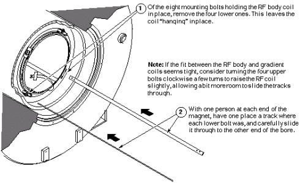
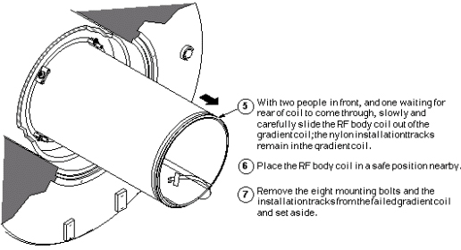
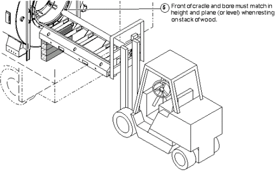
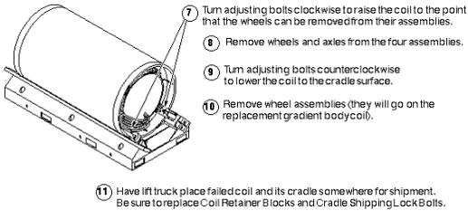

- 00000018WIA30F00030GYZ
- id_131070961.2
- Jul 6, 2019 12:17:31 AM
Failed Gradient Body Coil Removal
Prerequisites
| Required persons | Preliminary requirements | Procedure | Finalization |
|---|---|---|---|
| 4 minumum | Not Applicable | Not Applicable | Not Applicable |
| Item | Quantity | Effectivity | Part number | Manufacturer |
|---|---|---|---|---|
| Nylon Tracks: 1/4-in. thick, one in. wide, and 60 in. long. (Two holes in each end of the track; one is smooth and goes all the way through, while the other is threaded and only goes partially through the track. Two tracks come with each replacement Epoxy-filled Combined Gradient Coil.) | 2 | - | - | - |
| Class 1 Four-Wheel, Electric Rider Lift Truck; rated at 6000 lb. with forks a minimum of 56 in. long and side shifter for easy width adjustment and lateral movement of forks. (Required if coil, cart, and cradle need to be lifted together — a necessity in mobile units) | 1 | - | - | - |
| 12 in. length of 1/2 in. I.D. Hose | 1 | - | - | - |
| Hose Clamps for 1 in. O.D. Hose | 2 | - | - | - |
| 4 in. long Piece of Copper Tubing, 1/2 in. O.D. | 1 | - | - | - |
| Paper Towels | 1 roll | - | - | - |
| Latex Gloves | 1 pair, minimum | - | - | - |
| Nonmagnetic Torpedo Level (or similar device) | 1 | - | - | - |
| Rubber Pads (for use under Replacement Coil) | Refer to explanation. | - |
6.5 mm Thick (P/N 2126201) and 9.5 mm Thick (P/N 2135234) | - |
| Epoxy-filled Gradient Coil Cart (P/N 2134810), Cradle (P/N 2134810-2) and Accessory Kit (P/N 2134810-4). | 1 | - |
2144093 | - |
| Nonmagnetic Tool Kit | 1 | - |
46-320273G1, G2, G3, or G4 | - |
| Save the rubber pads for use under the replacement coil. General Electric magnets with resistive shim coils require two 6.5 mm thick pads, one at each end of bore. Magnets without resistive shim coils require the same two pads, plus three 9.5 mm thick pads at each end. (Oxford magnets require two 9.5 mm thick pads under each end.) | - | - | - | - |
| ||||||||||||
| Condition | Reference | Effectivity |
|---|---|---|
|
Verify that the Epoxy-filled Gradient Coil accessory kit contains all the parts listed in Kit Contents. | - | - |
| - | - | |
| - | - | |
| - | - | |
| - | - |
About this task
After the Gradient Body Coil is completely disconnected, follow either of two procedures:
-
If the RF Body Coil is operational, it must be removed for later installation in the replacement gradient coil. In this case, proceed to Step 1
OR
-
If the RF Body Coil is to be replaced along with the Gradient Coil, proceed to Replacement Coil Installation.
Note:For more information, refer to Gradient Coil Replacement Introduction.
Failed Gradient Body Coil Removal
Procedure
Remove the RF Body Coil as described below:Notice - Refer to the illustration below for proper placement of the
RF Body Coil installation nylon tracks.
Figure 1. Positioning Nylon Tracks 
- Attach the RF Body Coil installation tracks as described below.
Figure 2. Attaching RF Body Coil Installation Tracks 
- Remove the RF Body Coil from the Gradient Coil as described
in the following illustration.
Figure 3. Removing RF Body Coil from Gradient Coil 
Note:If the fit between the RF and Gradient Body Coils seems tight, consider turning the four upper bolts clockwise a few turns to raise the RF Coil slightly, allowing a more room to slide the tracks through.
Proceed to the next section.
- Refer to the illustration below for proper placement of the
RF Body Coil installation nylon tracks.
Using Coil Cradle and Cart
Procedure
- The Epoxy-filled Gradient Coil cradle and cart are used to install
and remove the Epoxy-filled Gradient Coil (with or without the RF
Body Coil) at the magnet. Study the components identified below, as
well as referring to Service Note 60880 82239.pdf for more information
on using the Gradient Coil Cart.
Figure 4. Components of Gradient Body Coil Cradle and Cart 
Warning 
CAUTION 
Moving the almost 3.300 pounds of the combined coil, cradle, and cart requires a minimum of four people; therefore, follow the steps below to prevent damage to the equipment, and for the safety of those using that equipment.CAUTION The next steps that prepare the empty cradle and cart to receive the failed body coil.
Figure 5. Prepare Cart and Cradle 
- Refer to the illustration below to assemble the Roller Wheel
Assemblies and mount them on the failed coil.
Figure 6. Assembly and Mounting of Roller Wheel Assemblies  Note:
Note:Roller Wheel and Axle Positioning: In most cases, the axle/wheel combination is positioned in the higher of the two holes in the wheel housing (relative to a side view of the housing). The lower hole is used for placement of a body coil into a magnet without a resistive shim coil. (This type of magnet bore is larger in diameter so the body coil must sit higher in the bore.)
Removing Failed Body Coil
Procedure
Refer to the illustration to remove the rubber pads.Warning Figure 7. Removing Rubber Pads  Note:
Note:Remember to use the saved rubber pads under the replacement coil. Refer to the Tools and Test Equipment section at the beginning of this procedure for an explanation of usage and part numbers.
CAUTION
Refer to the illustration below to place the empty cradle/cart at the magnet, and load the failed coil onto it.Notice Figure 8. Positioning Empty Cradle and Cart 
Coil Replacement in Mobile Sites
Procedure
- Lifting Coil Load
- This illustrates how to prepare the lift truck for changing
gradient coils in a mobile unit.
Figure 11. Acquiring Empty Cradle 
- This illustrates placement of the wood stack against the magnet
bore.
Figure 12. Supporting Empty Cradle with Wood Stack 
- The illustration below demonstrates how to move the coil onto
the cradle.
Figure 13. Rolling Failed Coil onto Cradle 
- Refer to the illustration below to prepare the failed coil for
return shipment.
Figure 14. Preparing Failed Coil for Return Shipment 
- This illustrates how to prepare the lift truck for changing
gradient coils in a mobile unit.
Finalization
Finalization
No finalization steps.